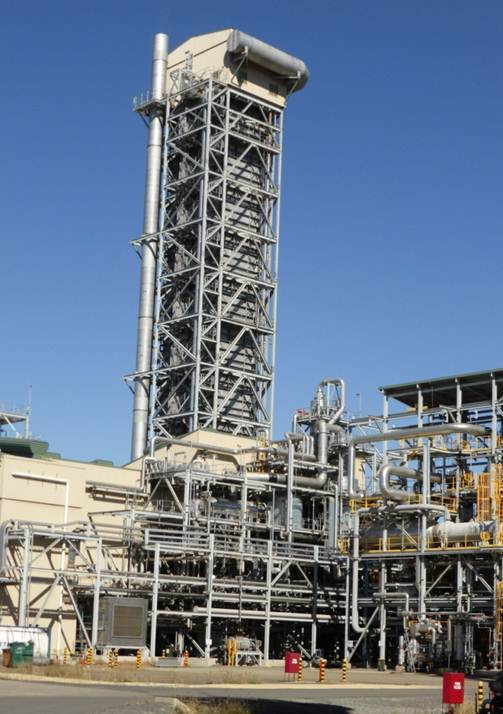

Согласно доклада OECD по перерабатывающей промышленности, Казахстан располагает превосходным фундаментом для развития химической промышленности, цитируя значительную материальную базу, внутренний рынок со значительным неудовлетворенным спросом и близость к значительным рынкам сбыта.
В то же время ключевым припятствующим фактором являются: Острая нехватка технологии по глубокой переработки газа, устарелость и износ существующих производств.
Текущая потребность в минеральных удобрениях 1млн. тонн в год
Превышение потребления над производством 83,6%
Внесение азотных удобрении 101кг/га
Текущее положение
Существующее производство
В основу производства на АО «КазАзот» гранул АС положен технологический процесс гранулирования плава аммиачной селитры в барабанном грануляторе-сушилке (БГС). Грануляция основана на распылении плава аммиачной селитры концентрацией 95-96%,
Барабаны грануляторы ПСМУ первоначально было запроектированы под совершенно иной вид продукции: NPK(аммофос, диаммофос, суперфосфаты, нитрофос т.д). Текущее производство является «приспособлено» к производству селитры и не отражает последние разработки в грануляции азотных удобрении.
Башня приллирования
Технология приллирования

Процесс приллирования осуществляется распылением плава АС в металлической/бетонной грануляционной башне, обеспечивая высоту падения гранул ~50 м. Падающие капли плава охлаждаются и кристаллизуются в виде гранул встречным потоком воздуха, создаваемым вентиляторами.
При применении данной технологии возможно производство пористой аммиачной селитры(LDAN) особо востребованной в добыче полезных ископаемых. Для производства удобрении, технология отошла на второй план, в связи с постоянно меняющимися тенденциями в международном рынке азотных удобрении.
Грануляция
Технологии грануляции
С конца 80ых технологии грануляции азотных удобрении получили бурное развитие и на сегодняшний момент существует ряд технологии:
Докатывание («Fattening») гранул из башни приллирования в специально оборудованных барабанах(Grande-Paroisse, KT, Casale, SNC Lavalin)
Комбинированный процесс - Кипящий слой + Барабан-гранулятор (De Smet)
Ключевым преимуществом грануляции является гибкость технологического процесса, т.е. использование разного сырья и добавок, возможность варьирования содержания питательных веществ в ответ на сложившуюся конъектуру рынка а также увеличенный срок годности готовой продукции что особенно важно для трейдеров.
Приллирование
Сверходнородный гран.состав
Возможность производства пористой селитры
Безретурный процесс
Минимальное количество динамического оборудования
Меньшее число эксплуатационного персонала
Грануляция
Гибкость процесса, возможность варьирования % содержания азота и размера гранул.
Значительно более высокая прочность на раздавливание и истирание*
Увеличенный срок годности
Производство азотных удобрении с Ca, Mg, Mn, S, P, K, Fe т.д
Приллирование
Ограниченный ассортимент конечной продукции
Срок годности готовой продукции 6 месяцев.*
Меньшая механическая прочность.
Грануляция
Значительно большие капитальные расходы
Большее число эксплуатационного персонала
Более долгий срок реализации проекта
Большая потребность в кВт, вода, пара
Количество потенциальной продукции на тонну аммиака